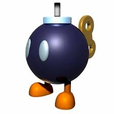

CONCEPTUALIZACIONES GENERALES
Introducción a los Virus Informáticos
Caracteristicas de los Virus
Tipos de Virus
Formas de Eliminar un Virus Informático
Regresar a la portada
Los virus informáticos fueron creados a imagen y semejanza de los virus del ser humano. Los seres humanos se contagian de enfermedades o de virus que se propagan por el aire como: la gripe, el sarampión, la viruela,etc. También un computador puede contagiarse de un virus este se propaga en gran medida a través de la red de computadores que es el Internet, algunos virus solo causan efectos ligeramente molestos mientras que otros virus pueden dañar tu hardware, software o archivos de tú ordenador.
Los virus son programas ejecutables, lo que significa que el virus puede estar en tu computador pero no puede infectarlo a menos que lo abras, es importante observar que un virus no puede propagarse por el ordenador mientras el usuario no tenga acción de activarlo.Pero los virus se camuflan muy bien y muchas veces las personas los activan sin saberlo en el momento de que abre archivos infectados, envia mensajes de correo con datos adjuntos,o abre ciertas propagandas que se le presenta en el Internet.
Cuando el virus se ha ejecutado este ya esta infectado mientras no se lo active este unicamente esta hospedado en su computador.
Gracias al servicio del Internet, hoy en día son más comunes los virus, es por eso que el usuario debe tener programas antivirus, o vacunas diseñados o creados para proteger los ordenadores contra el ataque de los virus.
Los Virus informáticos son programas que interfieren con el hardware y software de una computadora, están diseñados para reproducirse y evitar ser detectados por cualquier otro programa informático, este debe ser ejecutado para que funcione esto quiere decir, que se debe cargar el virus desde la memoria del ordenador para que este se ejecute y se active el virus. Cuando el virus es cargado este puede trastornar, borrar o modificar archivos de datos, osea toda la información de su computador, también presenta mensajes de alerta y el peor daño que puede causar es borrar el sistema operativo.
Historia de los Virus Informáticos
Años de Aparición |
Resumen de la Historia |
|---|---|
|  | |
| Año 1949 | En este año aparece el famoso científico matemático John Louis Von Neumann, de origen húngaro, escribió un artículo, publicado en una revista científica de New York, exponiendo su "Teoría y organización de autómatas complejos", donde demostraba la posibilidad de desarrollar pequeños programas que pudiesen tomar el control de otros, de similar estructura. |
| Año 1959 | En los laboratorios de la Bell Computer, subsidiaria de la AT&T, 3 jóvenes programadores: Robert Thomas Morris, Douglas McIlory y Victor Vysottsky, a manera de entretenimiento crearon un juego al que denominaron CoreWar, inspirados en la teoría de John Von Neumann. Este programa disminuia la memoria del computador. |
| Año 1988 | Robert Tappan Morris, quien en 1988 introdujo un virus en ArpaNet, la precursora de Internet. | Año 1972 | En este año aparece el virus Creeper, creado por Robert Thomas Morris, que atacaba a las computadoras IBM 360, emitiendo periódicamente en la pantalla el mensaje: "I'm a creeper... catch me if you can!" (soy una enredadera, agárrenme si pueden). |
| Año 1980 | En ente año la red ArpaNet del ministerio de Defensa de los Estados Unidos de América, precursora de Internet, emitió extraños mensajes que aparecían y desaparecían en forma aleatoria, asimismo algunos códigos ejecutables de los programas usados sufrían una mutación. |
| Año 1981 | En Agosto de este año la International Business Machine lanza al mercado su primera computadora personal, simplemente llamada IBM PC. Un año antes, la IBM habían buscado infructuosamente a Gary Kildall, de la Digital Research, para adquirirle los derechos de su sistema operativo CP/M, pero éste se hizo de rogar, viajando a Miami donde ignoraba las continuas llamadas de los ejecutivos del "gigante azul". |
| Año 1983 | Keneth Thompson, quien en 1969 creó el sistema operativo UNIX, resucitó las teorías de Von Neumann y la de los tres programadores de la Bell y en 1983 siendo protagonista de una ceremonia pública presentó y demostró la forma de desarrollar un virus informático. |
| Año 1984 | El Dr. Fred Cohen al ser homenajeado en una graduación, en su discurso de agradecimiento incluyó las pautas para el desarrollo de un virus. Este y otros hechos posteriores lo convirtieron en el primer autor oficial de los virus. El Dr. Cohen desarrolló varias especies virales y experimentó con ellas en un computador VAX 11/750 de la Universidad de California del Sur. |
| Año 1986 | Se reportaron los primeros virus conocidos que ocasionaron serios daños en las IBM PC y sus clones. El comienzo de la gran epidemia ese año se difundieron los virus (c) Brain, Bouncing Ball y Marihuana y que fueron las primeras especies representativas de difusión masiva. Estas 3 especies virales tan sólo infectaban el sector de arranque de los disquetes. Posteriormente aparecieron los virus que infectaban los archivos con extensión EXE y COM. |
| Año 1988 | Robert Tappan Morris, hijo de uno de los precursores de los virus y recién graduado en Computer Science en la Universidad de Cornell, difundió un virus a través de ArpaNet, (precursora de Internet) logrando infectar 6,000 servidores conectados a la red. |
| Año 1995 | Aparece una nueva familia de virus que no solamente infectaban documentos, sino que a su vez, sin ser archivos ejecutables podían auto-copiarse infectando a otros documentos. Los llamados macro virus tan sólo infectaban a los archivos de MS-Word, posteriormente apareció una especie que atacaba al Ami Pro, ambos procesadores de textos. En 1997 se disemina a través de Internet el primer macro virus que infecta hojas de cálculo de MS-Excel, denominado Laroux, y en 1998 surge otra especie de esta misma familia de virus que ataca a los archivos de bases de datos de MS-Access. |
| Año 1999 | Empezaron a propagar masivamente en Internet los virus anexados (adjuntos) a mensajes de correo, como el Melisa o el macro virus Papa. Ese mismo año fue difundido a través de Internet el peligroso CIH y el ExploreZip, entre otros muchos más. |
| Año 1999 | Apareció el BubbleBoy, primer virus que infectaba los sistemas con tan sólo leer el mensaje de correo, el mismo que se muestra en formato HTML. |
| Año 2002 | se reportó el VBS/Stages.SHS, primer virus oculto dentro del shell de la extensión .SHS. 2002 surge el primer virus diseñado para atacar archivos Shockwave Flash de Macromedia y aparece winux, primer virus para ejecutables tanto de Windows como de Linux. |
La informática y sobre todo el Internet es un esparcimiento que no sólo ha traído ventajas a nuestras vidas sino que también problemas y uno de esos problemas es la inseguridad de los sistemas de información en los diferentes campos como son: negocios, hogares, empresas, gobierno, etc. Y entre estos problemas de inseguridad se encuentran los famosos virus informáticos cuyo objetivo es ocasionar daños y perjuicios a la información de cada usuario que posee una computadora. Estos virus pueden ocasionar desde pequeños trastornos como la aparición de mensajes en pantalla hasta grandes errores como el formateo de los discos duros del ordenador, y efectivamente este puede ser uno de los mayores daños que un virus puede realizar a un computador.